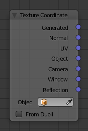

Texture Coordinate Node¶

Texture Coordinate Node.
The Texture Coordinate node is commonly used for the coordinates of textures, typically used as inputs for the Vector input for texture nodes.
Inputs¶
This node has no inputs.
Properties¶
- Object
- Specific object to use for object space coordinates. This only affects the Object output.
- From Dupli
If the material is applied to a dupli object, use texture coordinates from the parent object. This only affects the Generated and UV outputs.

From left to right: Sphere with UV mapped texture. Small spheres duplicated to the faces of the textured sphere using duplifaces. Small spheres with From Dupli enabled, using the UV map of the large sphere.
Note
From Dupli only works with the UV output when the dupli object is instanced from faces, either with particles or duplifaces.
Outputs¶
- Generated
- Automatically-generated texture coordinates from the vertex positions of the mesh without deformation, keeping them sticking to the surface under animation. Range from 0.0 to 1. 0 over the bounding box of the undeformed mesh.
- Normal
- Object space normal, for texturing objects with the texture staying fixed on the object as it transformed.
- UV
- UV texture coordinates from the active render UV map.
- Object
- Position coordinate in object space.
- Camera
- Position coordinate in camera space.
- Window
- Location of shading point on the screen, ranging from 0.0 to 1. 0 from the left to right side and bottom to top of the render.
- Reflection
- Vector in the direction of a sharp reflection, typically used for environment maps.